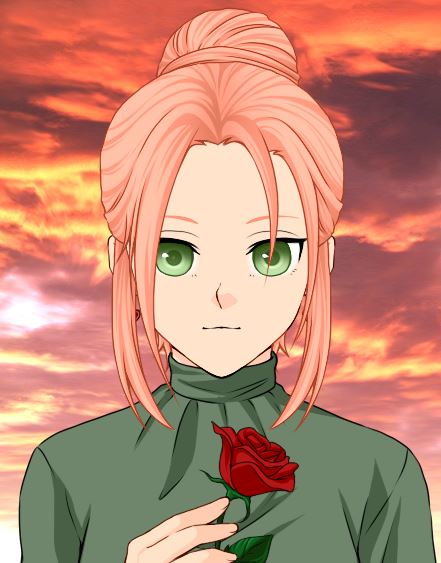

Ficha de personajes: Thea Taylor.

Thea Anderson, Guardiana del Elemento del Aire.
Datos personales.
- Nombre y apellido.
- Thea Taylor.
- Alias.
- Guardiana del Aire.
- Estrella del Viento.
- Fecha de nacimiento.
- 11/08
- Elemento.
- Aire.
- Nación.
- Nación de las Corrientes.
- Altura.
- 174cm.
Personalidad.
- Puntos buenos.
- Inteligente. Extrovertida. Asertiva.
- Puntos malos.
- Prepotente. Egoísta. Caprichosa.
- Ambiciones.
- Casarse con un hombre rico y guapo que le quiera.
Aficiones y gustos.
- Color preferido.
- Verde.
- Comida preferida.
- Dorada a la plancha.
- Aficiones.
- Moda. Animales. Música pop. Novelas turcas.
Habilidades principales.
Elemento básico.
- Bajo.
- Tornado de aire.
- Medio.
- Vendaval.
- Fuerte.
- Disparo concentrado.
- Protección.
- Escudo desviador.
Sellos básicos.
- Protección.
- Barrera hermética.
- Curación.
- Saneamiento II.
- Ataque.
- Proyección.
Especiales.
- Principal.
- Flechas de Viento.
- Guardiana del Aire.
- León Blanco.
Físicos.
- Tiro con arco.
- Perfecto.
- Esgrima.
- Bueno.
Estadísticas.
- Elemento.
- 797/1000
- Sellos.
- 867/1000
- Físico.
- 407/1000
Cursos estudiados.
| Curso |
Años |
Rango de edad |
Obligatorio o no obligatorio |
| Básico |
4 |
12-15 |
Obligatorio |
| Medio |
3 |
16-18 |
Obligatorio |
| Superior |
3 |
19-21 |
No obligatorio |
| Especialización |
2 |
22-24 |
No obligatorio |
Notas globales.
| Curso |
Media |
| Básico |
Excelente. |
| Medio |
Notable alto. |
| Superior |
Notable alto. |
| Especialización |
Excelente. |